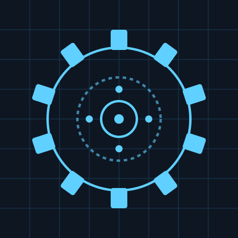
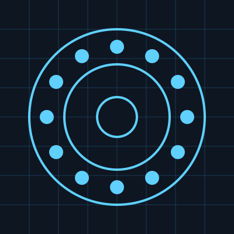
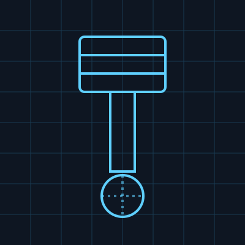
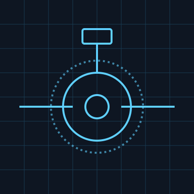

Ingranaggi di Precisione
Ingranaggi cilindrici e conici lavorati con tolleranze micrometriche, pensati per trasmissioni ad alta efficienza e lunga durata in ambienti industriali gravosi.
NovarkLab progetta e realizza componenti meccanici di alta precisione per l'industria. Uniamo know-how artigianale e tecnologie di lavorazione avanzate per garantire qualità, affidabilità e tempi di consegna certi su ogni singolo pezzo.

Ingranaggi cilindrici e conici lavorati con tolleranze micrometriche, pensati per trasmissioni ad alta efficienza e lunga durata in ambienti industriali gravosi.

Soluzioni su misura per il supporto rotante di alberi e mandrini, con materiali selezionati per resistere ad alte velocità e carichi elevati.

Gruppi pistone-stelo lavorati con finiture di superficie certificate, ideali per sistemi oleodinamici e pneumatici che richiedono tenuta perfetta.

Valvole, raccordi e corpi valvola realizzati su disegno del cliente, testati per garantire tenuta a pressioni elevate e assoluta affidabilità.